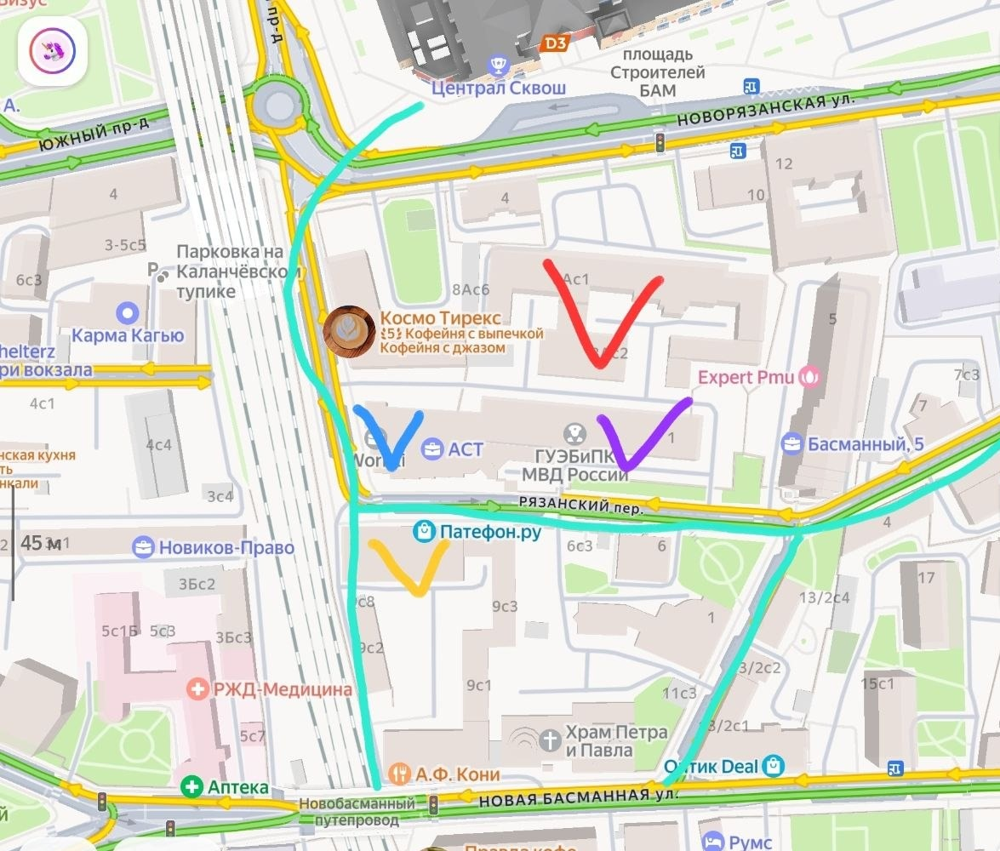
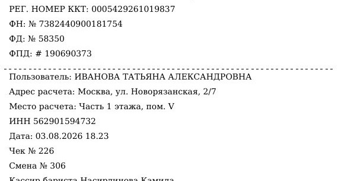
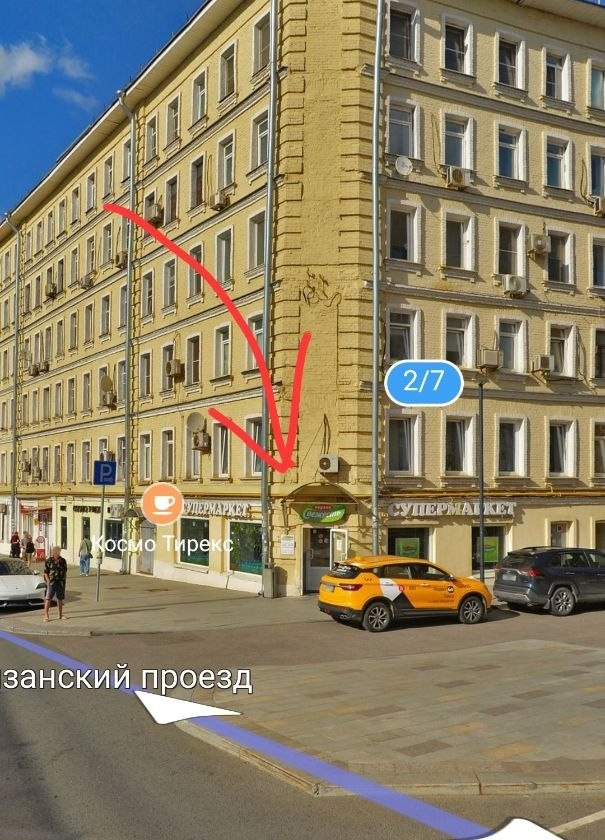

Новорязанская, 2/7: кофе с собой для четырёх офисных домов рядом. 20 м² на первом этаже, свой вход с улицы, вокзал в двух минутах. Точку открываем и ведём мы. Вы финансируете открытие и получаете долю выручки каждый месяц.
На фото: наша дверь и витрина на Новорязанскую, красным отмечено место вывески. Сеть кофеен Коферусс · Москва, с 2021 года · 14 кофеен
На открытие точки на Новорязанской, 2/7. Раунд 2 млн, половина уже выкуплена, свободно 1 млн. Аренда и стойка оплачены, деньги идут на смету открытия.
Место, стойка, команда, закупки, учёт. Вы в управлении не участвуете, но видите кассу.
Каждый месяц, пять лет с месяца открытия, по данным кассы. От выручки, не от прибыли: в худшем сценарии я отдаю вам всю прибыль точки.
Вложенное возвращается из выплат на 21–28-м месяце, дальше ещё три года каждая выплата — чистый доход.
в год на вложенное, до налогов, за пять лет выплат: 30, 39 и 48 % в трёх сценариях
₽ в месяц на втором году работы точки: от осторожного сценария до хорошего
за пять лет на вложенный миллион в базовом сценарии, до налогов: миллион назад и 1,9 млн сверху
Договор о финансировании открытия кофейни: доля выручки, не заём. Расчёт финмоделью сети для этой точки, три сценария потока, рост цен в меню 5 % в год; при 10 % в год доходность выше. Доходность: доход сверх вложенного за пять лет, делённый на пять. Сумма и доля обсуждаются. Не публичная оферта.
кофеен Коферусс в Москве: шесть своих и восемь по франшизе
выручка шести своих кофеен с 2022 по 2025 год
2025 год: +27 % к 2024-му.
Касса шести своих кофеен с января 2022 года; ещё восемь кофеен сети работают по франшизе, их выручка сюда не входит. Цена арабики: биржа ICE, 2023–2025.
Карта: Яндекс Карты, разметка основателя сети, 3 августа 2026. Вместимость Workki: карточка на ЦИАН. Численность РЖД и МВД не публикуется. Поток у входа замерен по часам основателем сети. Договор субаренды № 1-НВ/2026, подписан по ЭДО. Расстояния: Яндекс Карты, октябрь 2026.

чеков к 18:23 в понедельник 3 августа у кофейни «Космо Тирекс» в этом же доме, в 15 метрах от нашей двери. Контрольная покупка: номер чека в смене виден на нём самом.
Сосед работает в будни 7:30–20:00, в выходные 9:00–19:00: живёт на офисном и вокзальном потоке. Наш план скромнее: 60, 71 и 82 чека в день в трёх сценариях, от четверти до 36 % его буднего дня.

Источник: кассовый чек «Космо Тирекс» от 03.08.2026 (контрольная покупка), часы работы: Яндекс Карты на 07.10.2026. Сценарии нашей точки: финмодель сети, таблица ниже.
Мы не первые, кто открывается в этом доме. Соседи уже приучили людей заходить сюда, и у каждого свой поток: обед, заказы, офисный перекус. Кофе берут по дороге ко всем трём.
Милти встаёт на часть площади за шаурмой. Для нас это два плюса: якорь для сотрудников соседних офисов и повод для арендодателя снизить нам аренду. Он сам это предложил, допсоглашение в работе.
Источник: переписка с арендодателем 15–27 октября 2026 (часы работы соседей, предложение по Милти и снижению аренды). Оценка потока шаурмы: основатель сети, 28.10.2026.
| Шаурма | ежедневно до 21:00, работает. Собирает заметный поток в обед и вечером: готовый трафик у нашей двери |
| Озон | пункт выдачи до 22:00, работает. За заказами приходят каждый день, не только в обеденный час |
| Милти | готовая еда для офисов, заходит. Якорь для офисников соседних домов. С входом Милти аренда для нас снижается |

Договор субаренды и приложение № 2 к нему; платёж 240 000 ₽ по счёту № 4 исполнен банком. Состав и сумма вложений: финмодель точки, лист «Инвестиции» (открытие 1,57 млн, из них стойка 800 тыс. и обеспечительный платёж 120 тыс. уже в «сделано»; резерв на разгон 620 тыс.), паушальный взнос 300 тыс.
Кофе с собой у четырёх офисных домов, на пути от вокзалов. Аренда 120 тыс. ₽ фиксом, чек 350 ₽. В таблице месяц на плане: в первый месяц точка делает около 60 % плана и выходит на него к девятому месяцу.
| Месяц на плане | Осторожный | Базовый | Хороший |
|---|---|---|---|
| Чеков в будни / выходные | 70 / 35 | 85 / 35 | 95 / 50 |
| Чеков в день, в среднем | 60 | 71 | 82 |
| Выручка в месяц, ₽ | 638 400 | 755 440 | 872 480 |
| Аренда к выручке | 19 % | 16 % | 14 % |
| Прибыль точки в месяц, ₽ | 39 515 | 106 443 | 138 613 |
| Вам: 6 % выручки, ₽ | 38 304 | 45 326 | 52 349 |
| Остаётся мне, ₽ | 1 211 | 61 117 | 86 264 |
Таблица листается вбок.
В худшем сценарии я отдаю вам всю прибыль точки: 38 тыс. из 39,5 тыс., себе оставляю около тысячи в месяц. Плохой год наказывает меня, не вас.
Расчёт финмоделью сети: доли продукта, списаний и эквайринга, ставка бариста и постоянные расходы по факту наших точек. Налог по ставкам зрелого года: патент, в хорошем сценарии УСН 6 % (выручка выше предела патента, 10 млн ₽ с 2028 года). Режим налога уточняем с бухгалтером.
Два года выплаты возвращают вложенное, ещё три года идут чистым доходом. Плохой год бьёт по мне: в худшем сценарии я отдаю вам всю прибыль точки, 38 тыс. из 39,5 тыс., себе оставляю около тысячи в месяц.
Пример: Новорязанская, 2/7, сценарии из таблицы выше. Доходность — доход сверх вложенного за пять лет выплат, делённый на пять, до налогов; порядок налога зависит от статуса инвестора, уточняем с бухгалтером. Расчёт финмоделью сети: план выручки по месяцам, рост цен в меню 5 % в год. Не публичная оферта.
Выплата идёт от выручки, не от прибыли. В худшем сценарии я отдаю вам всю прибыль точки: вам 38 тыс. в месяц, мне около тысячи. Ваши 6 % выручки — около 30 % в год на вложенное.
Переезжаем: стойка — модуль, оборудование перевозится. Переезд только с вашего согласия, договор и выплаты переходят на новый адрес.
Неустойка 0,1 % в день. Просрочка больше 60 дней или три просрочки за год дают право потребовать возврат вклада. По договору отвечаю как ИП всем своим имуществом.
Закрыть или продать точку без вашего согласия нельзя. При закрытии имущество продаётся или оценивается, вы получаете часть пропорционально вкладу в смете.
По проекту договора о финансировании открытия кофейни. Полный текст высылаем после созвона.
Ответим на вопросы по точке, покажем смету, план выручки по месяцам и проект договора. После созвона пришлём расчёт сделки, финмодель точки, выручку всех наших точек с 2022 года и проект договора.
Не публичная оферта. Показатели расчётные, три сценария потока, не гарантируются. Предложение от ИП Оконовенко И. Г.